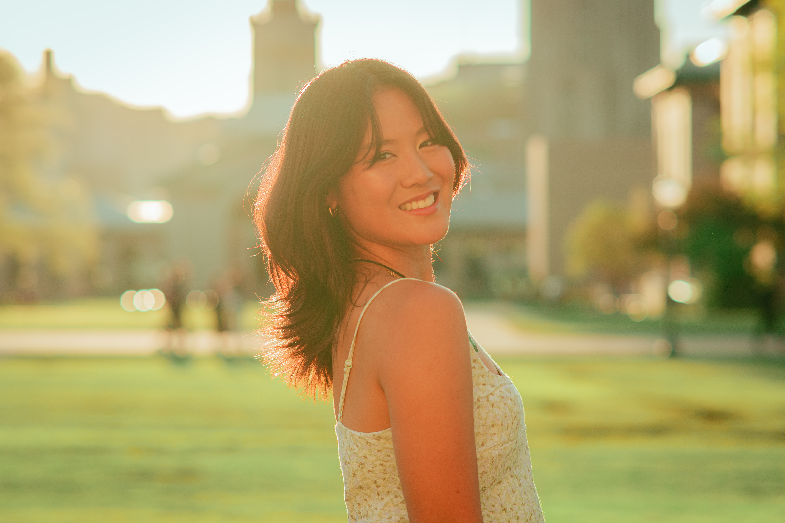

nice to meet you! my name is deya [德雅].
i am a recent graduate from carnegie mellon, studying both computer science and visual media.
photographing university life has made me fall deeply in love with the artistic process: each image is taken from the lens of celebration, friendship, and storytelling. i believe the moments that make life feel full are worth capturing and celebrating!
i'm fluent in english and mandarin, and regularly work with students, families, and community members.
it would be a joy to work with you <3
instagram: @shotbydeya
email: deya.liao@gmail.com
coded from scratch. © 2026